The Anunnaki Weren't Aliens — What the Texts Actually Say
Published October 16, 2026. The video argues from the tablets; this page is where the tablets sit. Every artifact below comes from the episode's own license-verified asset pack, with its credit printed under its image, and every claim on the page traces to the source list at the bottom.
The episode's reading rests on the creation epic Enuma Elish. These are the fragments of it the episode photographed and showed on screen, labeled on screen by the same catalogue numbers used here.
Enuma Elish, fragment K.3473. From the royal library of Ashurbanipal at Nineveh, 7th century BCE. British Museum.Photograph: Zunkir. License: CC BY-SA 4.0, via Wikimedia Commons.
The fragment from Nineveh
A piece of the creation epic from the king's own library. The episode opens on this fragment and returns to it: the poem it belongs to seats the Anunnaki at their stations, three hundred in heaven and three hundred on earth.
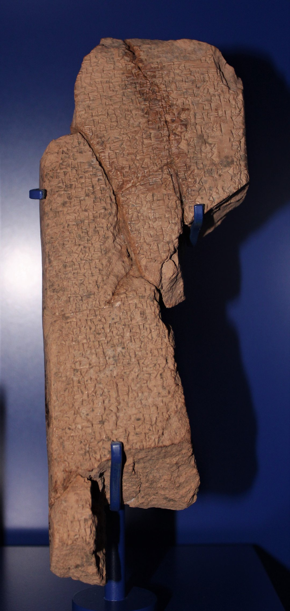
Enuma Elish, Tablet III. A copy of the epic's third tablet from Kish. Ashmolean Museum, Oxford, AN 1926.373.Photograph: Zunkir. License: CC BY-SA 4.0, via Wikimedia Commons.
The third tablet, from Kish
The epic survives because scribes copied it, city to city, century after century. This copy of Tablet III was excavated at Kish and is held by the Ashmolean Museum in Oxford.
The anchor fragment, by reference
K.5419c, British Museum
What it is: a fragment of Enuma Elish from Nineveh, Library of Ashurbanipal, 7th century BCE, catalogued by the British Museum as K.5419c.
Its place in the episode: the reading of Tablet I and of the stationing tradition, three hundred Anunnaki in heaven and three hundred on earth, rests on this fragment, in L. W. King's edition, The Seven Tablets of Creation (1902).
Why no photograph here: no photograph of K.5419c sits in the episode's open, license-verified asset pack, so this page shows none. The Enuma Elish fragments photographed above, K.3473 and AN 1926.373, are the fragments the episode showed on screen.
Scholarly gloss: "princely offspring," also rendered "royal offspring." The gloss is offered with care; the etymology is not fully settled.
Not in the record: the rendering "those who came from heaven to earth" is not an accepted academic translation of the name.
The family: the Anunnaki are the offspring of An, god of heaven, and Ki, goddess of earth.
First attestations: the name appears in writing by the time of Gudea of Lagash, with attestations from the Ur III period onward, as tracked by the ORACC Anunna project.
The job: from the earliest writings, their primary function is decreeing the fates of humanity.
The episode makes the point plainly: a name that means royal offspring is a constitution, not a star map. Heaven and earth have children, and the children run the world in between.
What the poems say
Four beats from the episode, each traceable to the source list below.
Seated, three hundred and three hundred
In Enuma Elish, the young champion Marduk defeats the sea goddess Tiamat, builds the world from her body, and then organises his court. He divides the Anunnaki and assigns them their stations: three hundred in heaven and three hundred on earth. In gratitude the great gods build him Esagila, his temple in Babylon, and raise its tower head high. The late version of the epic magnifies Marduk; the stationing is the epic's picture of a cosmos staffed like a state.
The drift downward
Across the centuries the word drifts, and the drift is itself evidence. After the Old Babylonian period the name is used mainly for gods of the underworld, set against the Igigi as the gods of heaven, though the texts are not fully consistent. In the Descent of Inanna, seven Anunnaki judges pass sentence on the goddess at the end of her descent. By the time of the great epics in their familiar forms, to meet the Anunnaki is very often to be dead.
Torches over the flood
In the flood book of the Epic of Gilgamesh, as the storm comes up, the poem pictures the Anunnaki lifting their torches and setting the land ablaze with their flare. The tablet that carries that flood story is photographed here, twice.
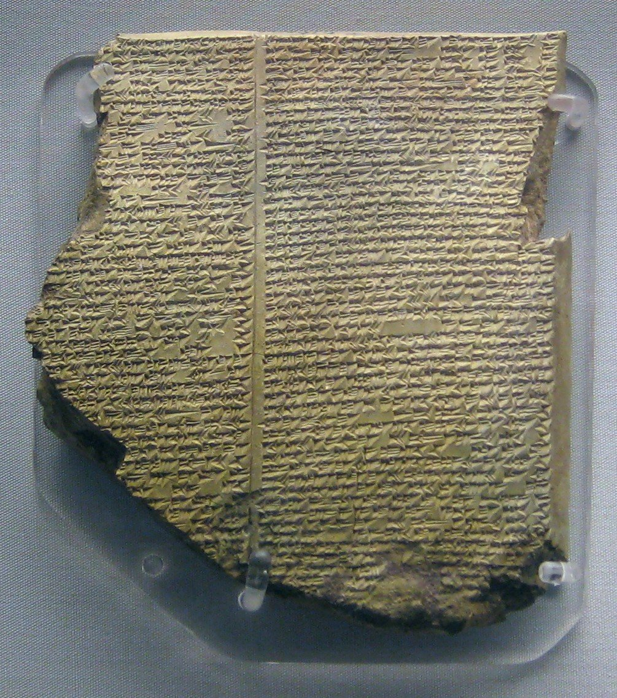
The Flood Tablet. Tablet XI of the Epic of Gilgamesh. British Museum K.3375.Photograph: BabelStone. License: CC0, via Wikimedia Commons.The Flood Tablet, second view. The same British Museum tablet, photographed in the gallery.Photograph: Mike Peel. License: CC BY-SA 4.0, via Wikimedia Commons.
How mankind is made, in the poems
The poems say the gods made mankind from clay and, in the Atrahasis and Enuma Elish tradition, from clay mixed with the flesh and blood of a slain god. The episode paraphrases this in its own prose rather than quoting at length, because the modern translation it draws on is still in copyright. The point stands on the record: a workforce made by the gods is genuinely in the texts. Visitors from a planet are not.
The claim from 1976, and where it breaks
A claim you can date is a claim you can check. The alien reading has a birthday, an author, and a first edition.
In The 12th Planet (1976), Zecharia Sitchin argued that the Anunnaki were beings from an undiscovered planet, Nibiru, swinging through the solar system on an orbit of 3,600 years in his telling. They arrived, he said, hundreds of thousands of years ago to mine gold, and engineered humans as a workforce. The episode states his case fairly, then sets it beside the record:
The verdict of the field: the reading is rejected by mainstream historians and Assyriologists as pseudohistory, built on mistranslations and quotations taken out of context.
The name: it does not carry the meaning the theory needs, as the record panel above shows.
Nibiru: in the cuneiform sources specialists read the word as a crossing point, a name associated with the god Marduk, not a distant home planet on a long orbit.
The Berlin seal: the cylinder seal Sitchin read as a solar system (catalogued VA 243 in the literature) is read by specialists as a common star symbol inside a standard scene, a worshipper standing before a god.
The missing tablets: no tablet produced anywhere describes gold mining by visitors or the engineering of a workforce. The poems' own account of human making is the clay, above.
More of the evidence wall
The supporting objects from the episode's pack: the older creation tablet, the hymn tablet, the seals the gods were pictured on, Babylon's gate and towers, and the hand copies scholars worked from.
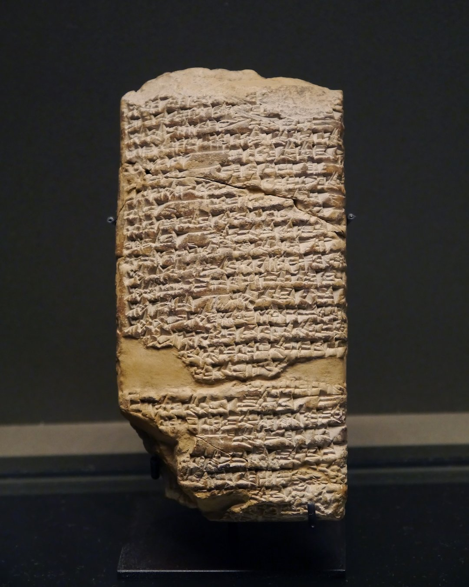
A Sumerian creation tablet. Louvre AO 6715. An older tablet of the same genre as the epic, labeled in the episode as Sumerian, not as Enuma Elish.Photograph: Poulpy. License: CC BY-SA 3.0, via Wikimedia Commons.A hymn tablet to Inanna. A balag lament to Inanna, also called Ishtar. Metropolitan Museum of Art, 86.11.286a.Metropolitan Museum of Art, Open Access. License: CC0.
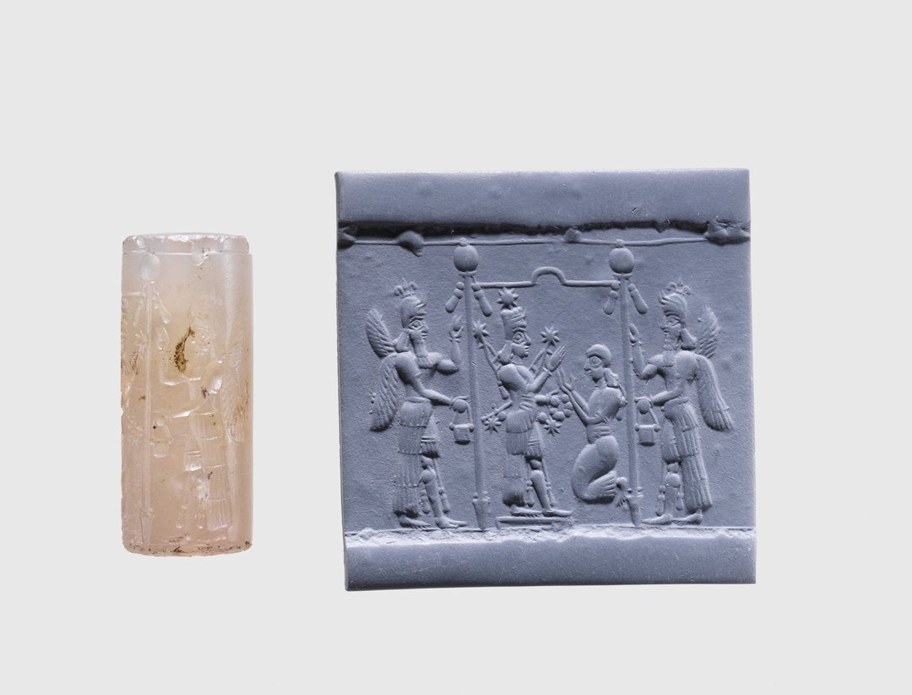
Cylinder seal with a cultic scene. Late 9th to early 8th century BCE. Metropolitan Museum of Art, 1989.361.1.Metropolitan Museum of Art, Open Access. License: CC0.
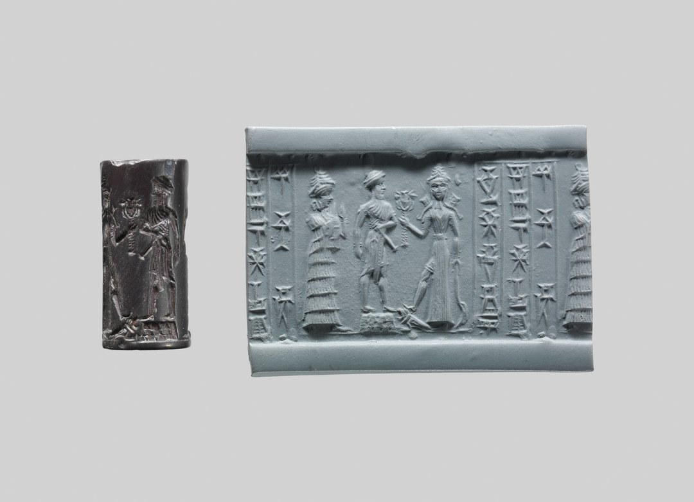
Cylinder seal, early second millennium. About 18th to 17th century BCE. Metropolitan Museum of Art, 1987.96.5.Metropolitan Museum of Art, Open Access. License: CC0.
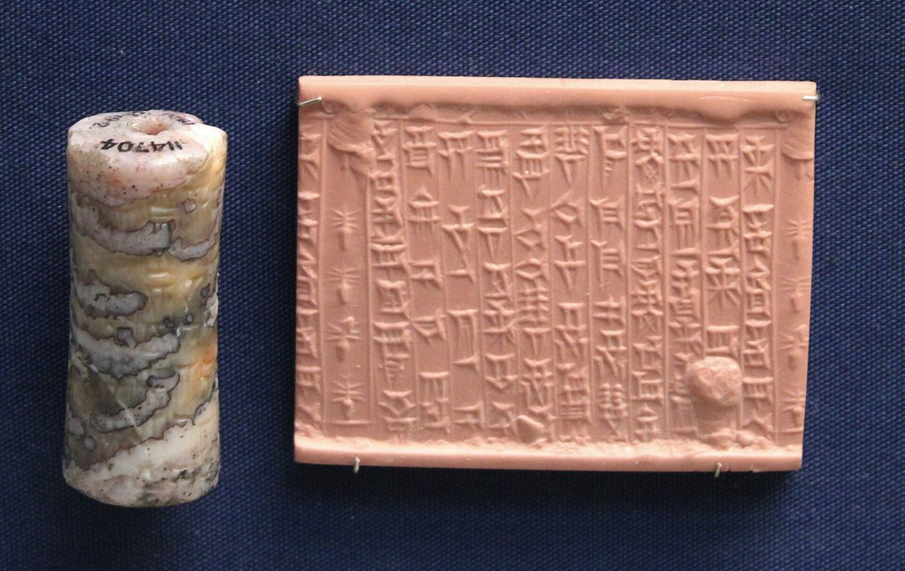
Seal of Uballissu-Marduk. Kassite period. British Museum 114704.Photograph: Zunkir. License: CC BY-SA 4.0, via Wikimedia Commons.The lion hunt of Ashurbanipal. Relief from the North Palace, Nineveh, the palace complex whose library held the epic.Photograph: Zunkir. License: CC BY-SA 4.0, via Wikimedia Commons.
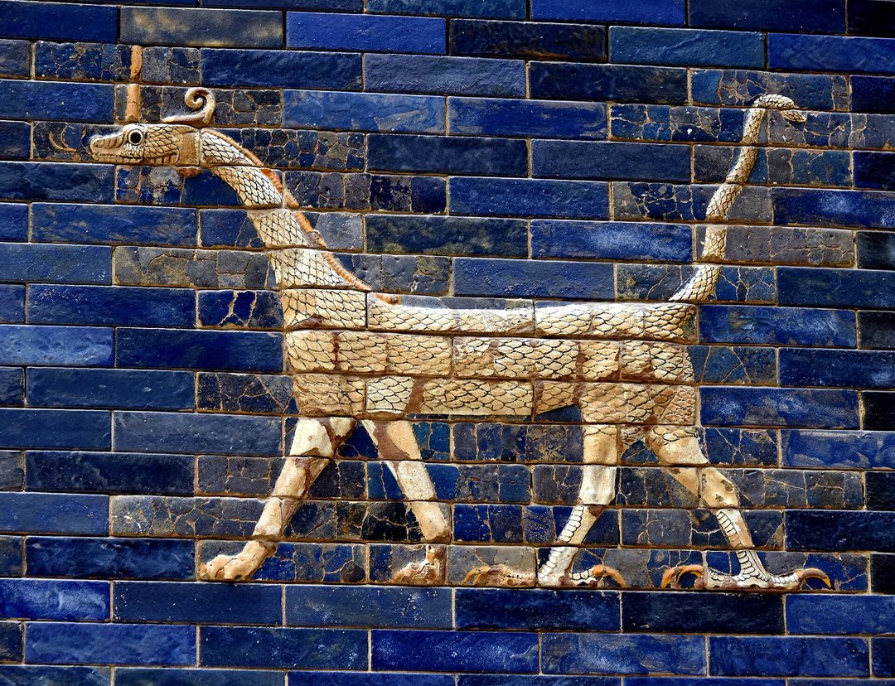
The mušḫuššu, dragon of Babylon. Glazed brick from the Ishtar Gate of Babylon, the dragon sacred to Marduk. Pergamon Museum, Berlin.Photograph: Osama Shukir Muhammed Amin. License: CC BY-SA 4.0, via Wikimedia Commons.
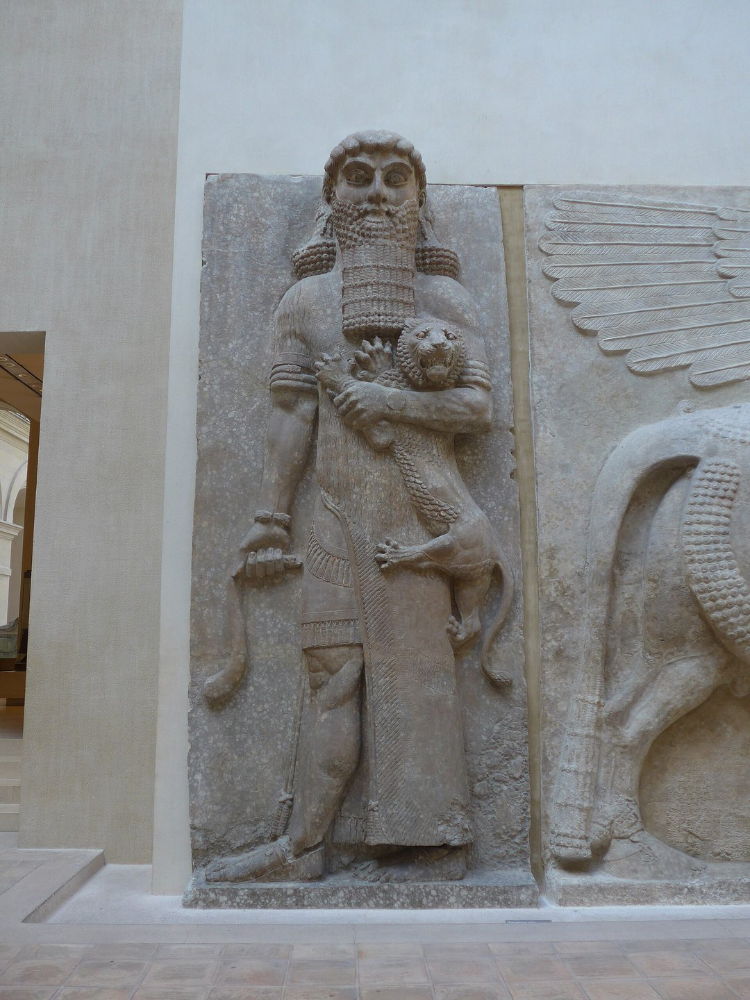
Hero mastering a lion. Neo-Assyrian relief, Louvre AO 19862, traditionally identified as Gilgamesh. The identification is traditional, and the page keeps the qualification the episode used.License: CC BY-SA 2.0, via Wikimedia Commons.
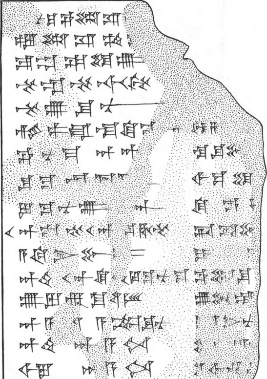
King's hand copy, Tablet I. A plate from L. W. King, The Seven Tablets of Creation (1902): the epic copied out by hand from the tablets, the way scholars first read it in print.Public domain.
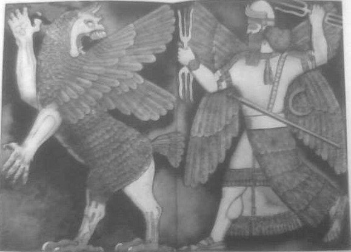
Marduk and the dragon. An early published drawing of the god with his dragon, the mušḫuššu.Public domain.The chaos monster, drawn by Layard's expedition. A god battles the chaos monster: the combat at the heart of the creation epic, as the first excavators published it.Public domain.Nineveh, 1859. The city of Ashurbanipal's library as the excavators drew it.Public domain.
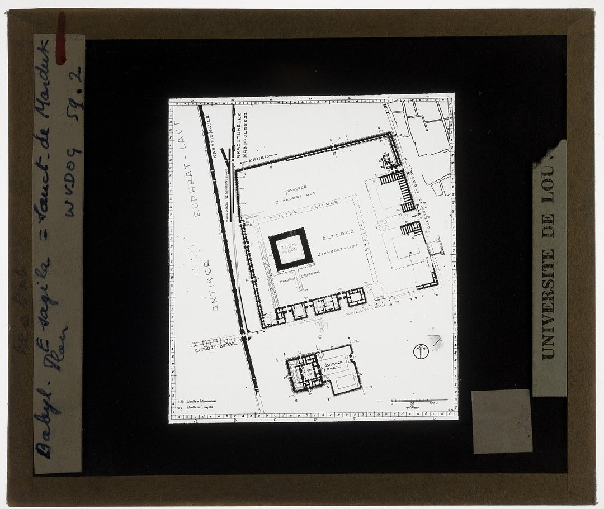
Plan of the Etemenanki. The great tower of Babylon, raised beside Esagila, the temple the gods built for Marduk in the epic's ending.Public domain.The Ziggurat of Ur. The staged tower of Ur, the world the Anunnaki governed in the oldest poems.Public domain.
Check it yourself
The episode's source list, in full. Every line on this page traces to one of these.
The anchor fragment: Enuma Elish, British Museum K.5419c, from the Library of Ashurbanipal, Nineveh. British Museum collection search. The fragments photographed on this page are K.3473 (British Museum) and AN 1926.373 (Ashmolean Museum, Oxford).
The edition: L. W. King, The Seven Tablets of Creation (1902). Public domain and free to read: find it at the Internet Archive.
The name and the function: the scholarly consensus as summarised in the Anunnaki reference literature, with the earliest attestations tracked by the Anunna project of ORACC, the Open Richly Annotated Cuneiform Corpus: oracc.museum.upenn.edu.
The labour tradition: Atrahasis, Tablet I, in Stephanie Dalley, Myths from Mesopotamia (Oxford, 1989). The episode paraphrases it in its own prose; no extended quotation is used.
The modern claim: Zecharia Sitchin, The 12th Planet (1976), and the reference literature's summary of the scholarly response, including the readings of Nibiru and of the Berlin seal VA 243.
The images: every photograph on this page comes from the episode's license-verified asset pack, verified on Wikimedia Commons and Met Open Access file pages. The credit and license sit under each image.
Go deeper in print: the episode's doorway is the chapter "The Anunnaki" in Gods of the Clay Tablets, and the chapter after it takes on the Twelfth Planet claim itself.


.jpg){kind=link}